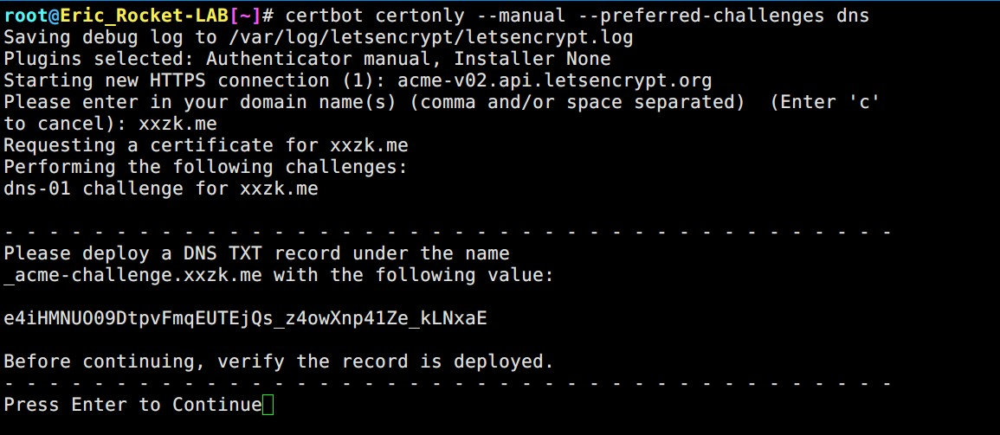
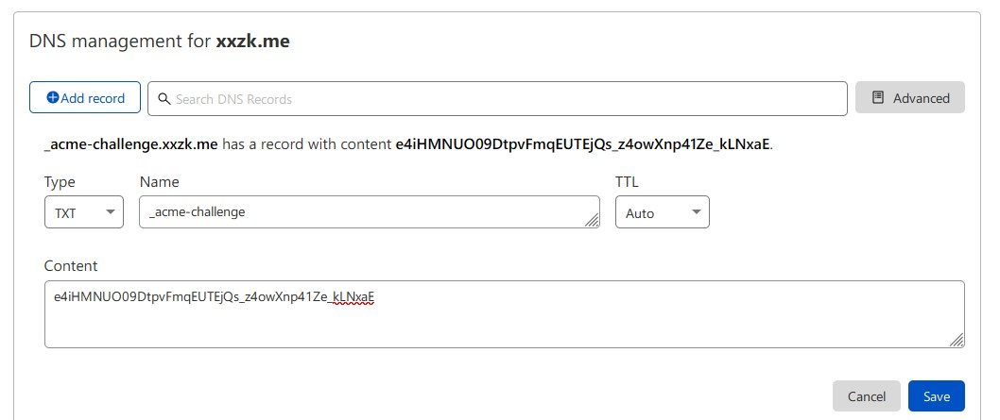
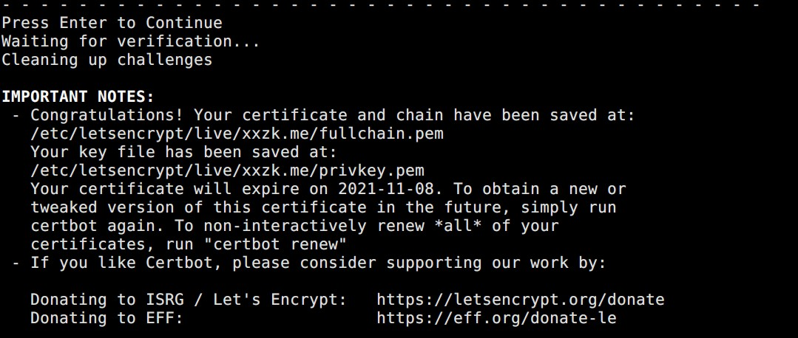
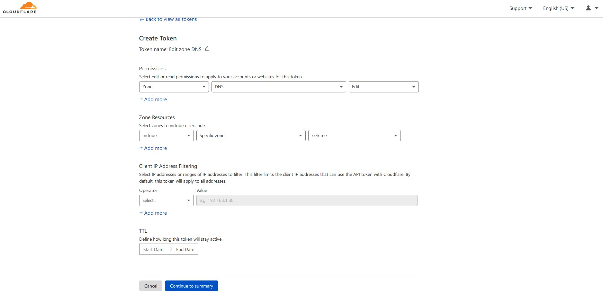
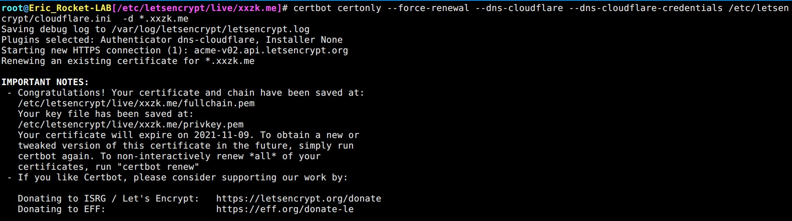
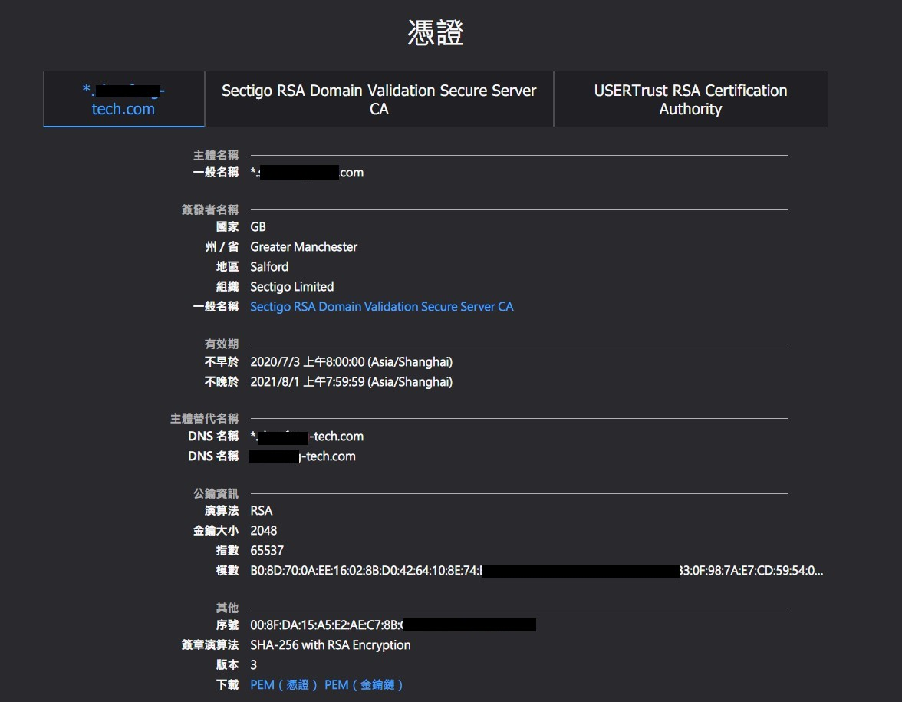
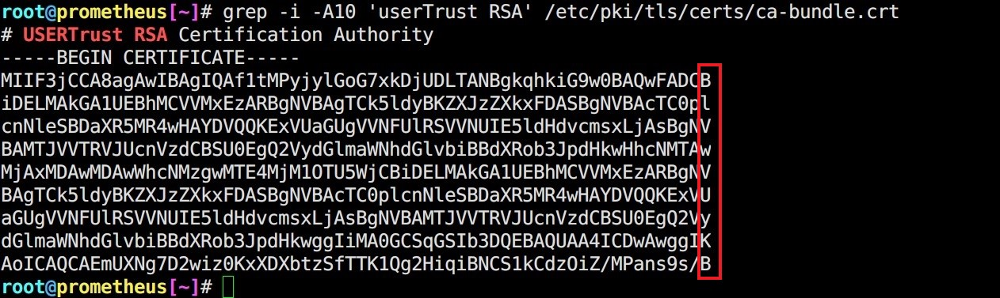
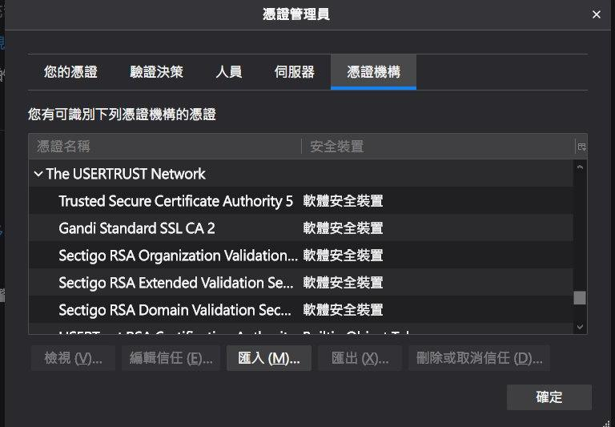

使用 certbot 取得免費 Let's Encrypt TLS/SSL 憑證
Contents

更新紀錄
2022.12.20: 整合另一篇筆記，關於缺少中繼憑證 (issuer certificate, intermediate certificate) 導致 curl 報錯，而瀏覽器沒事的 trouble shooting 過程。
介紹
Let’s Encrypt 是一個 ISRG 建立的非營利項目，免費提供 TLS/SSL Certification。
除了有超多網路巨頭 贊助商 同時也是 Linux Foundation 合作的項目
本篇筆記會記錄使用 certbot 這款專門為 Let’s Encrypt 打造的 ACME client (Automatic Certificate Management Environment) 來產生免費的 TLS/SSL 憑證 (TLS certification)
系統環境
DNS hosting: CloudFlare (Free plan)
OS: CentOS 7.9.2009
安裝 certbot
2021.10.13 更新，不建議用 yum 安裝 certbot。原因: EPEL 內的版本過低，無法使用 Cloudflare API token。
建議使用 pip3 install 或者 Docker
Running with Docker
|
|
|
|
從相依性套件我們可以知道 certbot 是由 Python 撰寫的。
[Manual] 申請 CA 憑證
certbot 有兩大功能: 1. 獲取憑證 2. 安裝憑證
The Certbot client supports two types of plugins for obtaining and installing certificates: authenticators and installers.
Getting certificates (and choosing plugins)
|
|
上面的指令翻譯成白話文就是:
certonly=> 我只要獲取憑證 (obtaining certification)
--manual=> 我要手動進行域名擁有權驗證
--preferred-challenges dns=> 偏好使用 DNS record 驗證 (預設使用 HTTP-01)

▲ 輸入要申請的域名、拿到指定 TXT record。 如果要申請 wildcard 以上面範例來說輸入 *.xxzk.me 即可

▲ 到 DNS hosting 設定 DNS record (證明網域擁有權)。這邊使用的是 CloudFlare。 對於驗證網域有問題的這邊請 Domain Validation
沒有綽啦! 買到域名第一件事情就是設定 NS 讓 CloudFlare 代管
回想上一次使用 CloudFlare DNS hosting 已經是 2015/1/20 的事情了 (菸~

▲ 驗證完成，成功拿到 Let’s Encrypt 簽發的 TLS Certification
這是 certbot 產生的 README。告訴使用者…
不要在這個路徑移動或者重新命名這些檔案，Web server 要使用 ln 過去即可
privkey.pem一看就知道是 private key 只不過習慣上會把附檔名改成.keyfullchain.pem一看就知道是 CA Bundlechain.pem用猜的也知道只包含 Root CA + issuer CAcert.pem想都不用想，證書本人
上面能這麼囂張的原因是… 我都用 openssl 偷看答案了 ^__^
|
|
|
|
[CloudFlare Plugin] 申請 CA 憑證
certbot CloudFlare 的 Plugin 可以做到自動幫我們更換 DNS record 的目的。這在之後 使用 cron job 自動更新憑證 時會使用到。 Let’s Encrypt 頒布的憑證時效只有 3 個月，如果不使用自動更新 (renew) 的方式會很麻煩。
Welcome to certbot-dns-cloudflare’s documentation!
安裝 CloudFlare DNS Plugin
2021.10.13 更新，不建議用 yum 安裝 certbot-dns-cloudflare。原因: EPEL 內的版本過低，無法使用 Cloudflare API token。
建議使用 pip3 install 或者 Docker
Running with Docker
[Docker Hub] certbot/dns-cloudflare
|
|
|
|

▲ 到 CloudFlare Dashboard 申請 API token。
範例
|
|
|
|
在 --force-renewal 之前 cert.pem 的 SHA256SUM 是 da579f4e9d38db942ce66c2e9b5e4dbaec14272bbb6ccc873d151c688294bd87
拿到新的 cert.pem 之後在算一次 SHA256SUM 雜湊 08b65867e2007e047629aa41f53bcc13b47048afb8a7d36c61e75dc8e422e0ba
得證，有更新!

▲ --force-renewal 成功
自動更新憑證 Automated Renewals
|
|
至於需要 random sleep 的原因是不想讓 server 在 00:00 接受 DDoS 攻擊 XD
Why need a random sleep in cron for certbot?
Let’s Encrypt Rate Limits
Let’s Encrypt 基於公平合理使用原則，針對不同操作訂下上限值。
1. 主要限制: 單一註冊域名 (Registered Domain) 每周至多 50 次申請證書。(Renew 則不在此限)
2. 每張證書能夠容納 100 個子域名 (subdomain)。這種證書又稱為 SAN certificate
3. 基於上述兩點，每周至多能申請 5000 個子域名 (subdomain)
4. 每個相同證書 (certificate) 每周至多 5 次更新 (renew)
碰觸到 1. 錯誤訊息會顯示 too many certificates already issued
碰觸到 4. 錯誤訊息會顯示 too many certificates already issued for exact set of domains
Let’s Encrypt 有加入 Certificate Transparency 這個專案，所以所有簽發憑證的紀錄 (log) 都能透過 crt.sh 查詢。
[Trouble shooting] 缺少中繼憑證 造成 curl 顯示錯誤
簡單說明問題，就是當我們 curl 會產生 curl: (60) Peer’s Certificate issuer is not recognized 的錯誤，但使用 browser 直接開啟 URL 卻不會跳任何憑證相關錯誤。
思考邏輯 & 查找過程
- 瀏覽器打開 URL 不會跳憑證錯誤 > 在沒有私自匯入自簽憑證前提下 ，代表這張證書是經過 Root CA 認可的。
從瀏覽器打開憑證頁面可以看到完整的 Trusted Chain ，而且知道:
- 公司買的、伺服器給的憑證是 wildcard certificate (*.xxxx-tech.com)
- issuer (又稱簽發者、中繼) 是 Sectigo RSA Domain Validation Secure Server CA
- Root CA 是 USERTrust RSA Certification Authority

- 查找到這裡我就想說: 那會不會是 client 端系統的 Root CA 沒有包含 USERTrust RSA Certification Authority ?
(註:天真的以為憑證單靠 Root CA 做驗證，沒有 Full Trusted Chain 的概念)
那就先來更新 ca-cerificates 吧! yum update (更新 package index) yum install ca-certificates 結果系統告訴我們 ca-certificates 套件已是最新版
Umm.. 不然就搞剛一點 確認系統 Root CA 是不是真的有 USERTrust RSA Certification Authority
- 透過
strace curl https://xxx.xxx-tech.com | less查看curl會去哪個地方抓從放在系統的憑證 (Root CA 公鑰)
(關鍵字 Open)，得知路徑為 /etc/pki/ca-trust/extracted/openssl/ca-bundle.trust.crt，那就看看這個檔案有沒有包含 USERTrust RSA Certification Authority 吧!
|
|

▲ 經過比對後不僅有，key 的內容完全一樣 (比對公鑰建議採用瞇牌法 看邊 單看開頭不準)
-
使用
curl -v https//xxx.xxx-tech.com得知 NSS error -8179 (SEC_ERROR_UNKNOWN_ISSUER) 確認發生原因 是因為 server 沒有給中繼 (issuer) 憑證 -
後續開了一台 Nginx 起來測試，並且按照 這篇 製作 CA bundle
製作方式:
|
|
- your_domain.crt: 網路組給我們的 WildCard 憑證
- intermediate.crt: issuer 中繼憑證 (Sectigo 官網抓)
- root.crt: Root CA 憑證 (Sectigo 官網抓)
修改後的 Nginx conf 如下:
|
|
▲ reverse proxy, 有 HTTP 轉 HTTPS 功能 (80 轉 443)，ssl_certificate 直接遞出完整 trusted chain
參考資料
- How to install an SSL certificate on a NGINX server – HelpDesk | SSLs.com
- ssl certificate - Default CA Cert Bundle Location - Server Fault
- linux - List all available ssl ca certificates - Unix & Linux Stack Exchange
- Sectigo Knowledge Base
Q & A
- (瀏覽器憑證圖) 就有包含整個 trusted chain 了，為什麼還要加中繼 ? 瀏覽器預設也只有 root ca 的憑證不是嗎?
因為 root CA 不是直接簽發給你，他是往下簽給中繼，中繼再簽給你。 server 沒傳中繼憑證就會炸開
- root ca 簽 issuer ，然後我們跟 issuer 買， issuer 幫我們簽章，那為什麼 browser 沒有炸 ? 而且還抓的到 issuer 的資訊 (瀏覽器憑證圖)
browser 維護的 CA list 除了有包含 Root CA 還有 issuer 的

其它查找工具
|
|
特別感謝
- Willy
- seadog007
- James58899
- Tony Yip
Author
LastMod 2022-12-21 (50b5c05)